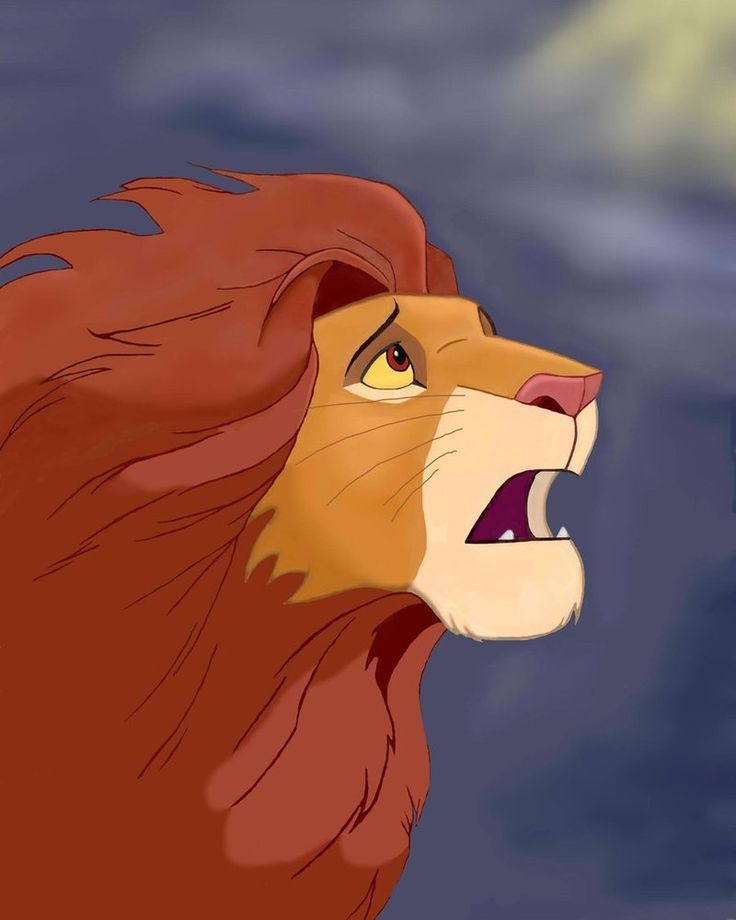
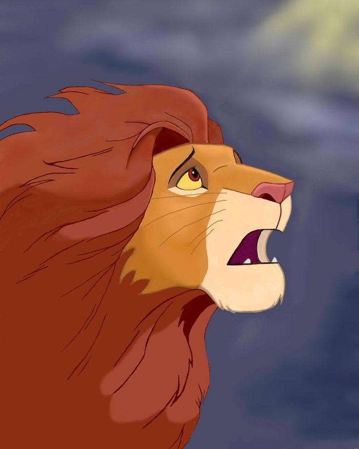

|
|
Муфаса
Муфаса — Муфаса — второстепенный герой анимационного мультфильма «Король Лев»;бывший правитель Земель прайда, отец Симбы, муж Сараби и старший брат Шрама.
| Все используемые материалы взяты с Википедии | Kiber One, 2019 |
МуфасаМуфаса — Муфаса — второстепенный герой анимационного мультфильма «Король Лев»;бывший правитель Земель прайда, отец Симбы, муж Сараби и старший брат Шрама. 
|